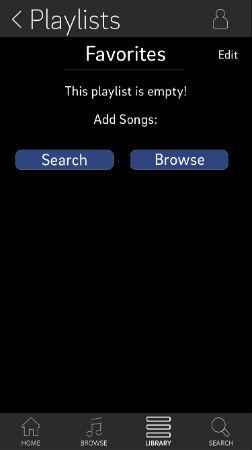
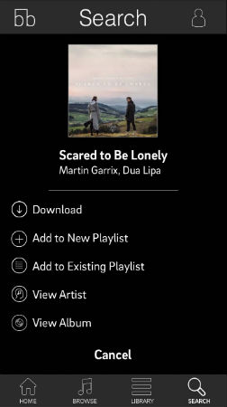
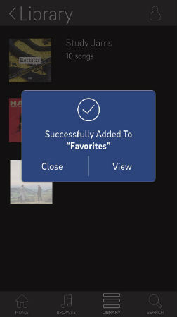
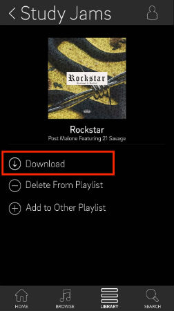
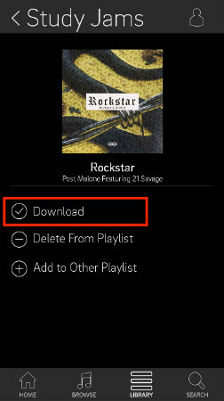
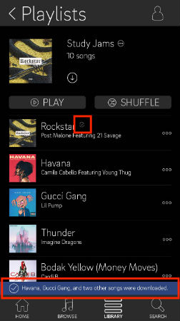

BACKGROUND
PROJECT - rethink the workflow of Spotify to enhance playlist construction and management
DATE - nov 2017
MY ROLE - ux designer
SKILLS - ux design & research, interviewing, wireframing, prototyping, information architecture, usability testing
TOOLS - sketch, InVision
TEAM - team of 4
DESIGN PROCESS
User Interviews
Our group also created 9 different scenarios that revolved around creating and managing a playlist. In the second part of the interview, each user performed 3 scenarios on their preferred app. By observing their interactions, we saw any kind of mistakes made in the process. Furthermore, each participant was asked to think aloud while navigating through each scenario in order for us to better understand their thought process.
These were the scenarios:
Competitve Analysis
Next, we compared major workflows between 4 music apps: Spotify, Apple Music, Mixer Box, and Hype Machine. We created 9 scenarios to analyze, and identified 2 good and bad examples for each. The scenarios we created tackled our problem space, which was how users created and managed playlists. Analyzing workflows across different applications was very insightful. I was able to understand screen sequences that were worth imitating and ones that simply don't work and should be avoided. Some of the comparisons that I worked on are shown below:
My team and I then made a competitive analysis on the information architecture used in Spotify, Apple Music, and Hype Machine. We wanted to look at each app's navigation structures, labels, and core elements in each navigation page. By creating these hierarchical sitemaps, we were able to filter through important features that we would mimic in our own application. We decided to keep the library, search, and browse buttons in the navigation bar just like Spotify and Apple Music. Like Spotify, we kept a home button as well. We felt that a radio button was not a necessary feature to have. The hierarchical sitemap I created for Apple Music is shown below.

FINAL DESIGN
The two workflows that we decided to redesign was 1) Playlist Creation: Create a playlist of favorite songs and 2) Playlist Management: Make a song available offline.
Scenario 1: Create a Playlist
Our final design for this scenario mimics Spotify in terms of workflow because interviews revealed that the process of creating a playlist on Spotify was very simple and intuitive, even for users who had never created a playlist before. A feature that I implemented in this scenario is a “search” and “browse” option when viewing an empty playlist that has been created. This idea came from Spotify, who only offers a browse option. By including a search option, it would accommodate users who already know what songs they want to add to their playlist, rather than go browsing for songs.

Though Spotify’s way of allowing their user to add a song to a playlist is simple as is, I wanted to make it even more straightforward by directly laying out user’s options which is to either add to an existing playlist or add to a new playlist. To do this, I simply created a button for both of these options.

Another feature I designed was an option to close or view the playlist after a user has added a song. In Spotify, a popup that notifies the user that their song had been added quickly dissolves after appearing. By creating a popup that stays open, I allow users to visit the playlist they’re managing, or simply close the popup and return to what they were doing. The advantage of having the “view” option is to allow users to either easily recover from an error, or to allow them to quickly visit the playlist to make sure it’s looking the way they want it to. For example, if a user accidentally adds a remix of a song instead of the original to their playlist, they can click "view" to get redirected to the playlist where they can delete the song from there. Without this option, the user would need to go to library, playlist, then select the playlist they want to manage. Having the view button saves the users multiple clicks.

Scenario 2: Make a Song Available Offline
For this scenario, our group designed a workflow for downloading a song to make it available offline. When deciding how to alert users that specific songs had been downloaded for offline use, we considered having a notification pop-up or having the original icon change. These are two ways applications typically notify users. Based on our observations and interviews, some users were unable to know if a song had been successfully downloaded unless they searched for the song within their library or playlist. This was a cumbersome process, which led us to believe that more obvious cues were needed to alert users. We also noticed that too many notifications often annoyed users. Therefore, we decided to notify users in two ways. Firstly, if they were in the options section of a song, they would simply see the download icon change. Anywhere else, a small notification at the bottom of the screen would appear. This notification is small enough that it will not distract users, but obvious enough to see. Finally, we also included icons next to songs at all times, allowing users to know that a song had been downloaded for offline use.
  
TAKEAWAYS
I learned a lot from this 4 week project, one being project management. I created a project timeline with my teammates, delegated tasks, and organized team meetings. I also learned how to use Sketch and InVision and how to create mockups with a team. Through creating hierarchical sitemaps, exploring workflows on different applications, and creating my own, I learned the ins and outs of information architecture. It was interesting to see the strengths and weaknesses in each app because it made me remember that design can always be improved.
If given more time, I would have liked to conduct user testing. This would have shown whether user pain points have been alleviated and where further improvements could be made.
For many of us, music plays a huge part in our everyday lives. With all the different music streaming apps available, each has their own unique features and aesthetic that satisfy different user needs. In this project, my team of 4 explored good and bad user experiences on existing music streaming apps such as Spotify, Apple Music, YouTube, and Hype Machine. Our goal was to redesign a music streaming app to specifically improve the interaction workflow of constructing and managing a playlist.
PROJECT - rethink the workflow of Spotify to enhance playlist construction and management
DATE - nov 2017
MY ROLE - ux designer
SKILLS - ux design & research, interviewing, wireframing, prototyping, information architecture, usability testing
TOOLS - sketch, InVision
TEAM - team of 4
DESIGN PROCESS
User Interviews
-
My team and I began our process by conducting a 2 part interview with 9 active users of music streaming apps. In the first part of the interview, we asked 23 questions that aimed to understand how people use their preferred music streaming application. This revealed main uses on the app, situational uses, and people's likes and dislikes. These were some of the questions:
- What application or website do you primarily use to listen to music?
- What information is most important to you on the home page?
- How do you find new music?
- When was the last time you made a playlist?
- Do you make playlists based on artists, genres, moods, events or other themes?
- Have you used other applications or websites in the past? If yes, why did you switch to the one you currently use?
- Can you describe a specific time you've been frustrated while using your app?
Our group also created 9 different scenarios that revolved around creating and managing a playlist. In the second part of the interview, each user performed 3 scenarios on their preferred app. By observing their interactions, we saw any kind of mistakes made in the process. Furthermore, each participant was asked to think aloud while navigating through each scenario in order for us to better understand their thought process.
These were the scenarios:
- Create a playlist you would use for a party you're having with friends, a road trip, a gym sesh, homework/studying, sad mood, happy mood, breakup...)
- Show me how you would add a song to an existing playlist
- Show me how you would add a song to a playlist that doesn't exist yet
- Show me how you would delete a song from a playlist WHILE you're listening to the song
- Show me how you discover new songs
- Show and describe how you would search for an album then create a playlist from that entire album
- Walk me through how you would use this app in the car (tell me your thought process out loud)
- Have you deleted playlists before? Can you describe the process of deleting an entire playlist?
- From a playlist with 10 songs, make 5 of those songs available offline
Competitve Analysis
Next, we compared major workflows between 4 music apps: Spotify, Apple Music, Mixer Box, and Hype Machine. We created 9 scenarios to analyze, and identified 2 good and bad examples for each. The scenarios we created tackled our problem space, which was how users created and managed playlists. Analyzing workflows across different applications was very insightful. I was able to understand screen sequences that were worth imitating and ones that simply don't work and should be avoided. Some of the comparisons that I worked on are shown below:


FINAL DESIGN
The two workflows that we decided to redesign was 1) Playlist Creation: Create a playlist of favorite songs and 2) Playlist Management: Make a song available offline.
Scenario 1: Create a Playlist
Our final design for this scenario mimics Spotify in terms of workflow because interviews revealed that the process of creating a playlist on Spotify was very simple and intuitive, even for users who had never created a playlist before. A feature that I implemented in this scenario is a “search” and “browse” option when viewing an empty playlist that has been created. This idea came from Spotify, who only offers a browse option. By including a search option, it would accommodate users who already know what songs they want to add to their playlist, rather than go browsing for songs.
For this scenario, our group designed a workflow for downloading a song to make it available offline. When deciding how to alert users that specific songs had been downloaded for offline use, we considered having a notification pop-up or having the original icon change. These are two ways applications typically notify users. Based on our observations and interviews, some users were unable to know if a song had been successfully downloaded unless they searched for the song within their library or playlist. This was a cumbersome process, which led us to believe that more obvious cues were needed to alert users. We also noticed that too many notifications often annoyed users. Therefore, we decided to notify users in two ways. Firstly, if they were in the options section of a song, they would simply see the download icon change. Anywhere else, a small notification at the bottom of the screen would appear. This notification is small enough that it will not distract users, but obvious enough to see. Finally, we also included icons next to songs at all times, allowing users to know that a song had been downloaded for offline use.
TAKEAWAYS
I learned a lot from this 4 week project, one being project management. I created a project timeline with my teammates, delegated tasks, and organized team meetings. I also learned how to use Sketch and InVision and how to create mockups with a team. Through creating hierarchical sitemaps, exploring workflows on different applications, and creating my own, I learned the ins and outs of information architecture. It was interesting to see the strengths and weaknesses in each app because it made me remember that design can always be improved.
If given more time, I would have liked to conduct user testing. This would have shown whether user pain points have been alleviated and where further improvements could be made.